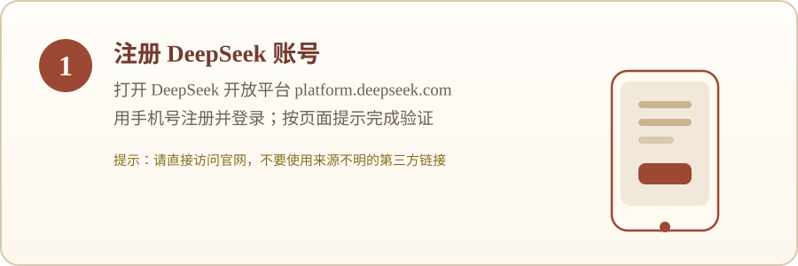
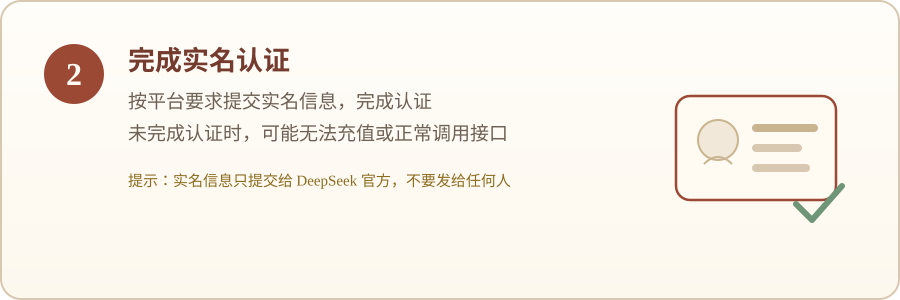
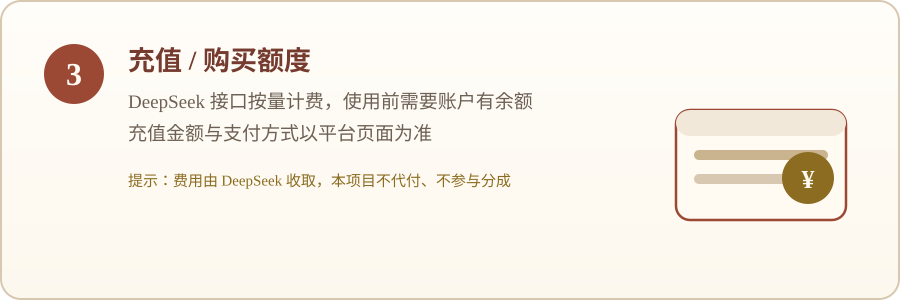
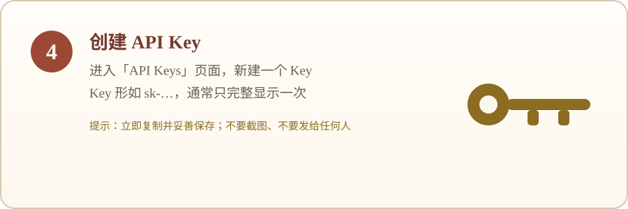
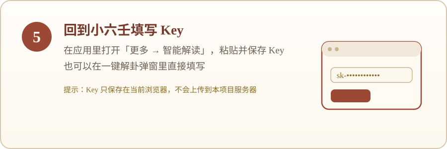

XIAOLIUREN · GUIDE
获取 DeepSeek API Key
「一键解卦」需要你自己在 DeepSeek 开放平台获取 API Key。本页按顺序说明注册账号、实名认证、充值额度与创建 Key 的步骤，最后回到应用填写。
先说结论：不填写 Key 也能正常使用排盘、历史记录和 AI 提示词；只有「一键解卦」需要你自己的 Key。本页只是操作参考，具体界面与要求以 DeepSeek 官网当前页面为准。
操作步骤
-
1. 注册 DeepSeek 账号

打开 DeepSeek 开放平台 platform.deepseek.com，用手机号注册并登录。
请直接访问官网，不要使用来源不明的第三方链接。
-
2. 完成实名认证

按平台要求提交实名信息并完成认证；未完成时可能无法充值或正常调用接口。
实名信息只提交给 DeepSeek 官方，不要发给任何人。
-
3. 充值 / 购买额度

DeepSeek 接口按量计费，使用前需要账户有余额；充值金额与支付方式以平台页面为准。
费用由 DeepSeek 收取，本项目不代付、不参与分成。
-
4. 创建 API Key

进入「API Keys」页面，新建一个 Key。Key 形如 sk-…，通常只完整显示一次。
请立即复制并妥善保存；不要截图，也不要发给任何人。
-
5. 回到小六壬填写

在应用里打开「更多 → 智能解读」，粘贴并保存 Key；也可以在一键解卦弹窗里直接填写。
Key 只保存在当前浏览器，不会上传到本项目服务器。
安全提醒
- API Key 等同于账号凭证：只保存在你自己的设备与浏览器中。
- 不要截图、发到群里，或粘贴到公开页面、反馈和第三方工具。
- 如果怀疑泄露，请立即到 DeepSeek 平台删除该 Key 并新建一个。
- 本项目不代管、不收集、不转售你的 Key；也不会要求你提供 Key。
费用与边界
- 接口按量计费，费用由 DeepSeek 收取；本项目不代付、不分成，也不对额度或结果作保证。
- 建议在平台设置余额或用量提醒，避免意外消耗。
- 本页仅为操作参考，不构成对 DeepSeek 服务的推荐、担保或背书；请以其官网当前页面为准。
常见问题
- 提示 Key 无效，或没有额度？
- 先确认 Key 是否复制完整、账户是否已充值；若仍无效，请在平台删除旧 Key 并新建一个，再回到应用重新保存。
- 找不到「API Keys」页面？
- 以 DeepSeek 官网当前页面为准；入口名称或位置可能调整。
- 可以把 Key 发给你们帮我配置吗？
- 不可以。Key 只属于你，请勿发给任何人，包括本项目的维护者。
- 换设备后 Key 还在吗？
- Key 保存在当前浏览器、当前身份下；更换设备或清理浏览器数据后需要重新填写。
- 不填 Key 能用哪些功能？
- 排盘、主题、历史记录、导入导出和 AI 提示词的生成与复制都可以正常使用；只有「一键解卦」需要 Key。
阅读边界：本站提供民俗文化体验、学习与记录参考，不替代医疗、法律、财务等专业意见，也不对现实结果作保证。